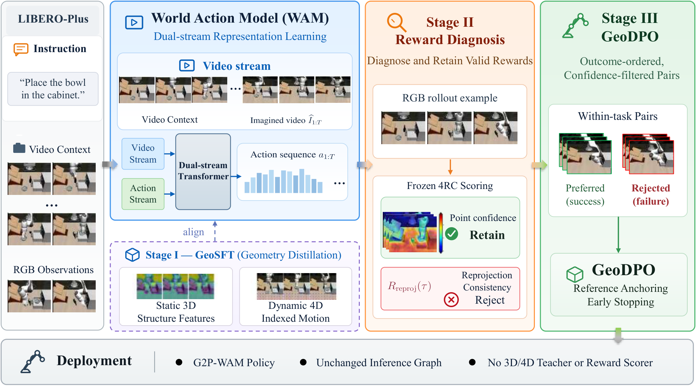
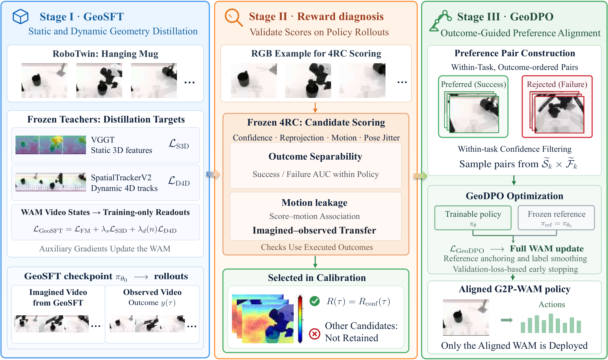
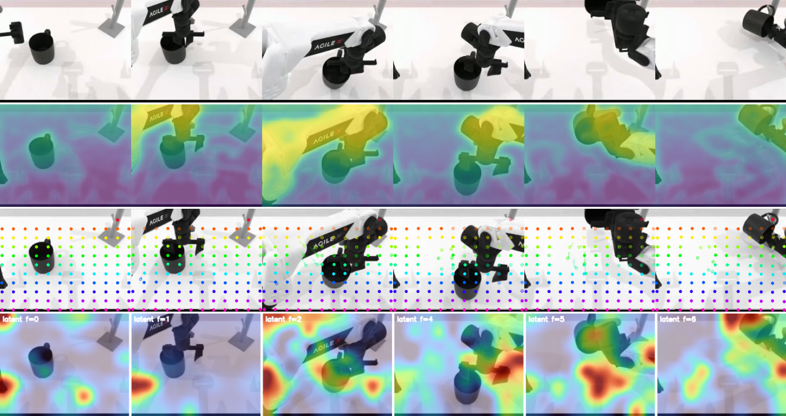
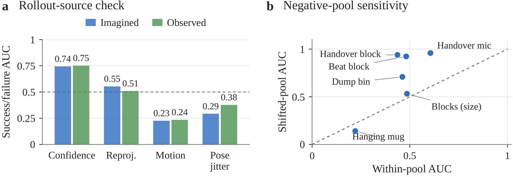
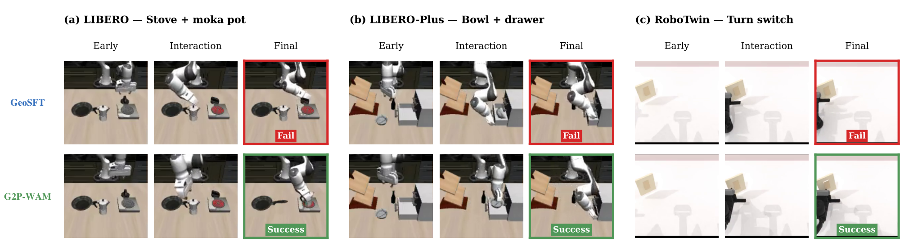
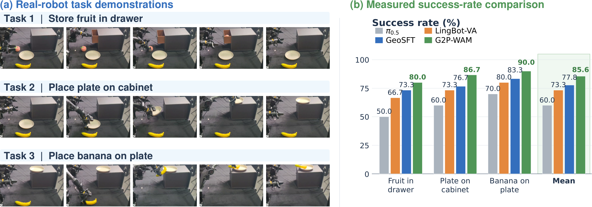
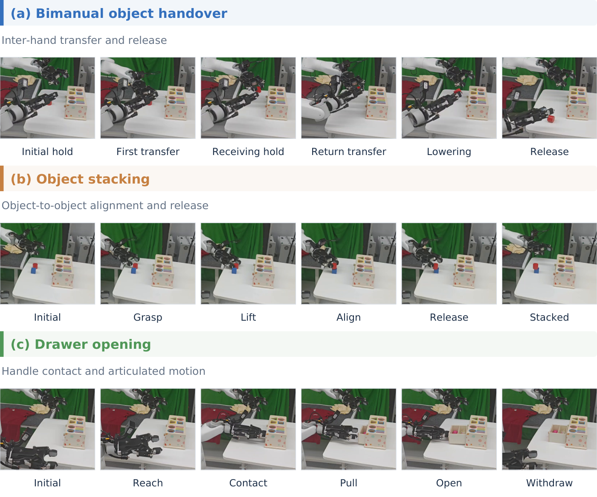

GeoSFT
Frozen VGGT features supervise static scene structure, while SpatialTrackerV2 trajectories supervise dynamic correspondence. Training-only readout heads transfer these signals into the WAM.
1. Geometry beyond representation learning. G2P-WAM connects static 3D and dynamic 4D distillation with preference alignment, allowing geometry to guide both demonstration learning and subsequent policy refinement.
2. Outcome-ordered, confidence-filtered preferences. Policy-relative diagnosis identifies reconstruction confidence as a trajectory-selection signal. Execution outcomes determine which rollouts are preferred.
3. The same inference graph. Geometric teachers, auxiliary heads, and reward scorers are used during post-training. Only the aligned world-action model is deployed.

World-action models (WAMs) jointly predict future observations and robot actions, yet visually plausible predictions do not guarantee successful execution. Geometric distillation improves representation grounding, but using geometry for subsequent policy improvement requires relating geometric scores to task outcomes. We propose G2P-WAM, a post-training framework that carries geometric supervision from representation learning into preference alignment. GeoSFT first aligns WAM features with static 3D representations and dynamic 4D trajectories. Reward diagnosis then evaluates candidate geometric scores against execution outcomes and compares their behavior on imagined and observed videos. GeoDPO uses outcomes to order preferences and reconstruction confidence to select trajectories for reference-anchored optimization. Experiments on simulation benchmarks and two physical-robot platforms show that preference alignment further improves the geometrically distilled policy. Joint static and dynamic supervision outperforms either branch alone, while confidence filtering improves on outcome-only preference training with matched pair counts and optimization settings. These results support using geometry for both representation learning and preference selection, without adding geometric teachers or reward scorers at deployment.
Two optimization stages connected by policy-relative reward diagnosis.

Frozen VGGT features supervise static scene structure, while SpatialTrackerV2 trajectories supervise dynamic correspondence. Training-only readout heads transfer these signals into the WAM.
Candidate 4RC scores are evaluated on the policy’s own rollouts. Outcome separation and agreement between imagined and observed videos identify mean point confidence as a selection signal.
Execution outcomes order the preferences. Within each task, confidence selects high-confidence successes and low-confidence failures for optimization against a frozen GeoSFT reference.


On 122 GeoSFT Turn Switch episodes, mean point confidence separates successful and failed executions with AUCs of 0.744 on imagined videos and 0.752 on observed videos. The score is used to select trajectories within outcome groups.
Joint static and dynamic supervision improves over either branch alone. With pair counts and training rules matched, confidence filtering improves mean success by 0.31 percentage points over outcome-only selection.
| Configuration | Pair selection | Mean |
|---|---|---|
| Static-only SFT | None | 92.28 |
| Dynamic-only SFT | None | 92.40 |
| GeoSFT | None | 92.46 |
| Outcome-only DPO | Full outcome pool | 92.67 |
| Matched outcome-only DPO | Random, count-matched | 92.64 |
| GeoDPO (G2P-WAM) | Confidence-filtered | 92.95 |
Simulation evaluation across RoboTwin 2.0, LIBERO, and LIBERO-Plus.
Across 50 tasks, G2P-WAM achieves 93.40% on Clean and 92.50% on Randomized, giving a mean of 92.95%. GeoDPO improves the GeoSFT mean from 92.46% to 92.95%, with 100 trials per task and setting.
| Method | Emb. PT. | Clean | Randomized | Mean |
|---|---|---|---|---|
| π₀ | Yes | 65.92 | 58.40 | 62.16 |
| π₀.₅ | Yes | 82.74 | 76.76 | 79.75 |
| Motus | Yes | 88.66 | 87.02 | 87.84 |
| LingBot-VA | Yes | 92.90 | 91.50 | 92.20 |
| Fast-WAM | No | 91.88 | 91.78 | 91.83 |
| WAM4D | — | 93.82 | 89.86 | 91.84 |
| MECo-WAM | No | 93.26 | 91.98 | 92.62 |
| 4D-WAM | No | 91.92 | 90.76 | 91.34 |
| G2P-WAM (ours) | Yes | 93.40 | 92.50 | 92.95 |
Success rates (%). Emb. PT.: embodied-policy pretraining. Mean equally weights Clean and Randomized. Baseline scores are from the corresponding original papers.
G2P-WAM reaches 98.58% average success across the four standard suites, including 99.0% on LIBERO-Long.
| Method | Spatial | Object | Goal | Long | Mean |
|---|---|---|---|---|---|
| π₀ | 96.8 | 98.8 | 95.8 | 85.2 | 94.15 |
| π₀.₅ | 98.8 | 98.2 | 98.0 | 92.4 | 96.85 |
| OpenVLA-OFT | 97.6 | 98.4 | 97.9 | 94.5 | 97.10 |
| Motus | 96.8 | 99.8 | 96.6 | 97.6 | 97.70 |
| LingBot-VA | 98.5 | 99.6 | 97.2 | 98.5 | 98.5 |
| Fast-WAM | 98.2 | 100.0 | 97.0 | 95.2 | 97.60 |
| MECo-WAM | 98.8 | 100.0 | 98.2 | 95.8 | 98.20 |
| 4D-WAM | 98.8 | 99.5 | 98.6 | 97.4 | 98.6 |
| G2P-WAM (ours) | 98.5 | 99.6 | 97.2 | 99.0 | 98.58 |
Success rates (%), as reported in the manuscript. Baseline scores are from the corresponding original papers.
Across seven perturbation factors, preference alignment increases the overall success rate from 76.7% to 79.5%. The evaluation covers camera, robot, language, lighting, background, noise, and layout changes.
| Perturbation factor | GeoSFT | G2P-WAM |
|---|---|---|
| Camera | 29.0 | 33.1 |
| Robot | 81.3 | 82.8 |
| Language | 92.0 | 92.0 |
| Lighting | 87.5 | 90.0 |
| Background | 71.6 | 76.1 |
| Noise | 84.1 | 86.4 |
| Layout | 91.7 | 95.8 |
| Overall | 76.7 | 79.5 |
Success rates (%). Overall equally weights the seven factors.
Selected executions, labeled by the source policy checkpoint.

Representative demonstrations on two physical-robot platforms.
Quantitative evaluation uses 30 trials per task and method.
The dual-arm robot stores fruit in a drawer, places a plate on a cabinet, and places a banana on the plate. GeoDPO raises mean success from 77.8% to 85.6%, with improvements on all three tasks.

On object handover, object stacking, and drawer opening, mean success improves from 87.8% to 92.2%. These tasks extend the evaluation to a second robot platform.

| Method | AgileX PiPER X | UNT David A1C |
|---|---|---|
| π₀.₅ | 60.0 | 77.8 |
| LingBot-VA | 73.3 | 82.2 |
| GeoSFT | 77.8 | 87.8 |
| G2P-WAM (ours) | 85.6 | 92.2 |
Mean success rates (%). Each platform is evaluated on three tasks, with 30 trials per task and method.
The reference implementation provides tensor-level components for GeoSFT, geometric score diagnosis, confidence-filtered preference construction, and GeoDPO. The modules operate on caller-supplied teacher targets and policy predictions.